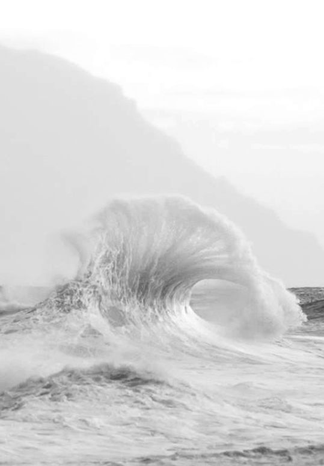

Established in 1998, White Water Rafting has grown from a single-river tour operator into a trusted name in adventure toourism. Known for safe, guided rafting experiences, the company serves thrill-seekers across multiple rivers while promoting environmental responsibility and outdoor exploration. Over the years, White Water Rafting expanded its operations to include multiple locations across North America, offering a range of trips from family-friendly excursions to advances whitewater challenges. The company has continually invested in high-quality equipment, rigorous guide training, and environmental stewardship initiatives to ensure safe, sustainable, and memorable river experiences.
Home of the White Water Rafting flagship tours, the Clearwater River is renowned for its dynamic rapids, scenic canyons, and crystal-clear waters. Stretching over 120 kilometers, it offers a balanced mix of calm stretches and thrilling class III-IV rapids, making it ideal for both beginners and seasoned rafters. Surrounded by lush forests and rugged terrian, the river provides not only adventure but a deep connection to nature-making it a core part of the company's identity and guest experience.